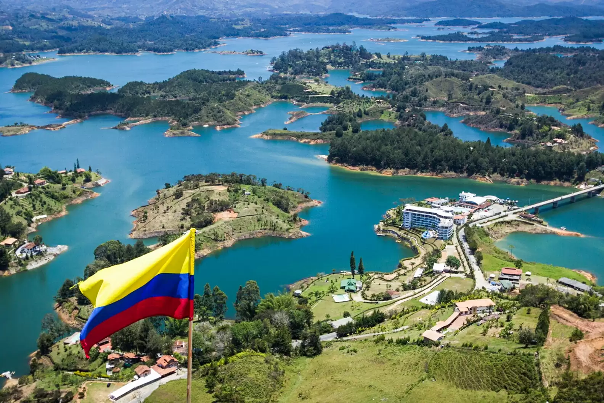

Relatos de Viaje y rutas compartidas
Somos Azul y Diogo, dos personas con un sueño: viajar por el mundo. Recorrimos playas de Brasil, la cordillera mendocina y el sur helado de Argentina, nuestro país. Hoy soñamos con recorrer Europa y próximamente estaremos conociendo Colombia. Este blog surge como diario de viajes y también como un rincón para compartir lo aprendido, las risas, los errores y los lugares que nos robaron el aliento. ¡Gracias por leernos!
Destinos destacados
Brasil

Ilha Grande, Brasil
Un paraíso entre la selva y el mar. Ideal para quienes buscan
naturaleza y poca gente.
Explorar destino
Colombia

Cartagena, Colombia
Colores, cultura y Caribe. Pronto sumamos relatos y consejos para
viajar.
Explorar destino
Europa

Europa soñada
Nuestra próxima gran aventura: recorrer Europa por 1 año y medio.
¡Sumate al viaje!
Explorar destino